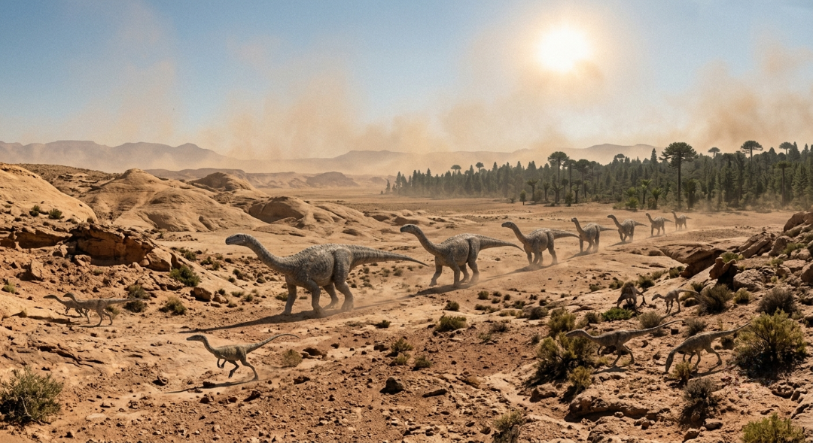
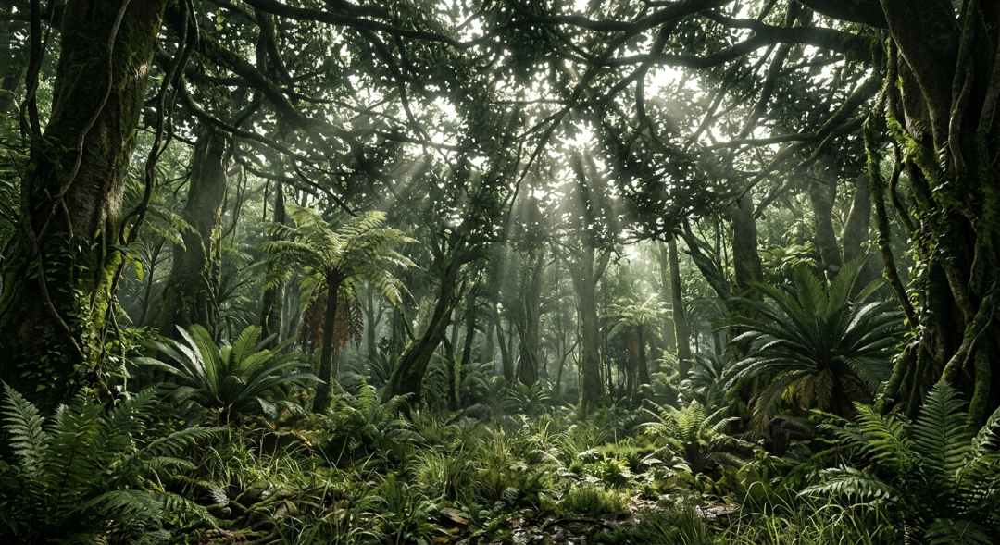
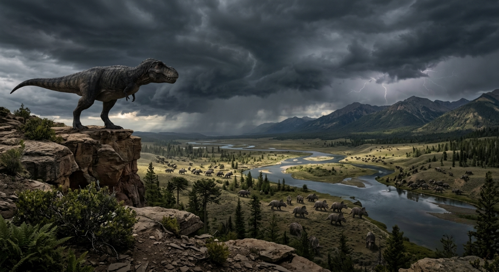
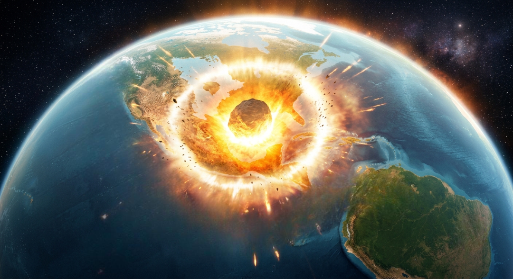
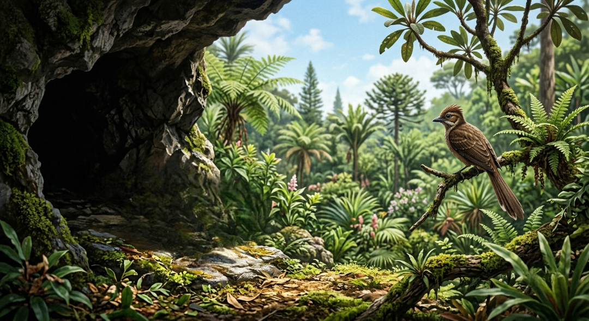

Початок нової ери (252 - 201 мільйонів років тому)
Мезозойська ера зародилася на попелищі Пермської катастрофи — наймасштабнішого вимирання в історії Землі, яке знищило понад 90 відсотків усього живого. Тріасовий період став епохою великого відновлення, коли суперконтинент Пангея являв собою безкрайню, спекотну пустелю, оточену єдиним океаном Панталасса. У цих суворих, посушливих умовах еволюція зробила ставку на нову групу рептилій — архозаврів, які завдяки своїй унікальній дихальній системі та енергоефективності змогли витіснити колишніх володарів суші та започаткувати абсолютно нову екологічну ієрархію.
Саме в середині Тріасу з'являються перші представники динозаврів, які спочатку були дрібними, двоногими й рухливими хижаками розміром не більшими за сучасного собаку. Проте, ближче до кінця періоду, еволюційні процеси спровокували появу перших ранніх зауроподморфів, таких як платеозаври, які почали стрімко збільшуватися в розмірах, щоб діставати до верхівок перших високих хвойних дерев. Перехід на рослинну дієту та подовження шиї заклали основу для майбутнього гігантизму, перетворюючи планету на полігон для випробування небачених раніше біологічних масштабів.
Паралельно з сухопутними процесами, перші гіганти почали завойовувати й океанічні простори, де з'явилися величезні морські рептилії — іхтіозаври, довжина яких могла перевищувати 20 метрів. Наприкінці Тріасового періоду відбулося ще одне вимирання, яке, втім, зіграло на руку динозаврам: воно знищило їхніх основних конкурентів на суші. Це відкрило перед молодими та амбітними видами рептилій абсолютно всі екологічні ніші, очистивши простір для настання справжнього "золотого віку" гігантських створінь, які незабаром підкорять собі всю планету.

Тріасовий світанок
Епоха відновлення біосфери після великого вимирання, поява перших динозаврів та початок їхнього еволюційного збільшення.
Епоха титанів (201 - 145 мільйонів років тому)
Юрський період ознаменувався початком розпаду суперконтиненту Пангея, що призвело до кардинальних змін глобального клімату, який став надзвичайно вологим, теплим і тропічним. Безкрайні пустелі минулого поступилися місцем гігантським, пишним лісам із деревоподібних папоротей, саговників та величних хвойних рослин, що створило нескінченну кормову базу для травоїдних тварин. Саме в цих тепличних умовах динозаври досягли свого справжнього еволюційного розквіту, а на суші запанував абсолютний гігантизм, масштаби якого досі не має з чим порівняти в історії Землі.
Володарями Юрського періоду стали зауроподи — колосальні чотириногі рослиноїдні титани, такі як брахіозаври, диплодоки та апатозаври, чия вага легко досягала від 30 до 80 тонн. Їхня унікальна анатомія, що включала полегшений повітряними мішками скелет, довгу шию та пташину систему дихання, дозволяла їм поглинати тони зелені щодня без зайвих енерговитрат на пересування. Земля буквально здригалася від кроків цих живих хмарочосів, які трималися великими стадами для захисту від не менш вражаючих і небезпечних хижаків тієї епохи.
Для полювання на таких велетнів еволюція створила новий клас м'ясоїдних термінатів, серед яких виділялися аллозаври та цератозаври — масивні двоногі хижаки з потужними щелепами та гострими, як бритва, зубами. Юрський період перетворив планету на збалансовану, але надзвичайно небезпечну екосистему, де розмір мав вирішальне значення для виживання. Це була ера, коли природа досягла свого максимуму в масштабах сухопутних хребетних, назавжди вписавши цей відрізок часу в геологічну історію як час абсолютного панування велетнів.

Юрський розквіт
Максимальний тріумф сухопутного гігантизму. Поява колосальних зауроподів та розвиток пишних вологих тропічних екосистем.
Апогей еволюції (145 - 66 мільйонів років тому)
Крейдовий період став найдовшим і фінальним етапом Мезозою, під час якого материки продовжували розходитися, формуючи контури сучасних океанів та ізольованих екосистем. Клімат залишався дуже теплим, а рівень світового океану піднявся до історичного максимуму, затопивши значну частину низин і створивши теплі мілководні моря. У рослинному світі відбулася справжня революція — з'явилися перші квіткові (покритонасінні) рослини, які разом із бджолами та іншими комахами-запилювачами стрімко змінили ландшафт планети, розфарбувавши її в нові кольори.
Незважаючи на зміну флори, динозаври утримували абсолютне лідерство, досягнувши неймовірного різноманіття та спеціалізації. На суші з'явилися знамениті рогаті цератопси, такі як трицератопси, та броньовані анкілозаври, які розвинули потужний захист проти нових, ще більш досконалих хижаків. Королем м'ясоїдних створінь цього періоду став легендарний Тираннозавр Рекс, який разом із кархародонтозаврами та спінозаврами представляв собою вершину біологічної інженерії хижих тероподів, володіючи колосальною силою укусу та бінокулярним зором.
В океанах Крейдового періоду панували гігантські мозазаври — люті морські рептилії, близькі родичі сучасних варанів, які виростали до 17 метрів у довжину і полювали на все, що рухалося. У той же час небо повністю контролювали птерозаври, серед яких виділявся Кетцалькоатль — найбільша літаюча істота в історії з розмахом крил до 11 метрів, що за розмірами дорівнював невеликому літаку. Біосфера Крейди досягла свого технологічного та розмірного апогею, ставши найскладнішою і найяскравішою сторінкою в усій історії Мезозою.

Крейдовий великий фінал
Час появи перших квітів, максимального розгалуження видів динозаврів та панування суперхижаків на суші, в небі та в океані.
Падіння з небес (66 мільйонів років тому)
Квітучий і величний світ Мезозою обірвався в один-єдиний день приблизно 66 мільйонів років тому, коли з космосу на колосальній швидкості прилетів гігантський астероїд діаметром близько 10 кілометрів. Космічне тіло врізалося в Землю в районі сучасного півострова Юкатан (Мексика), утворивши гігантський кратер Чиксулуб завширшки понад 150 кілометрів. Сила цього удару була еквівалентна вибуху мільйонів ядерних бомб, що миттєво випарувало мільярди тонн гірської породи, води та сірки, викинувши їх високо в атмосферу планети.
Ударна хвиля та супергарячі уламки, що падали назад на Землю, спровокували миттєві глобальні лісові пожежі, які охопили цілі континенти, а колосальні цунамі заввишки в сотні метрів змили все на узбережжях праокеанів. Проте найстрашнішим наслідком став товстий шар сажі, пилу та сірчаних аерозолів, який повністю заблокував сонячне світло на кілька років, зануривши планету в суцільну темряву та викликавши ефект "астероїдної зими". Температура на планеті різко впала, а процес фотосинтезу в рослинах зупинився, що миттєво зруйнувало всі харчові ланцюжки.
Цей кліматичний колапс став смертельним вироком для всіх великих істот: оскільки рослини та дрібні травоїдні масово гинули, гігантські динозаври просто не могли знайти величезну кількість їжі, необхідну для підтримки їхніх масивних тіл. Протягом короткого геологічного періоду непташині динозаври, птерозаври та великі морські рептилії повністю зникли з лиця Землі. Велике Крейдове вимирання назавжди закрило епоху гігантів, провівши криваву лінію між Мезозоєм та новою ерою, в якій планеті доведеться відбудовувати життя з нуля.

Імпакт Чиксулуба
Катастрофічне зіткнення з астероїдом, що викликало миттєву глобальну зиму та повністю знищило домінуючу екосистему рептилій.
Спадкоємці руін (66 - 60 мільйонів років тому)
Коли пил від космічної катастрофи нарешті осів, а небо очистилося від багаторічного смогу, Земля постала абсолютно спустошеною, але готовою до нового початку. Смерть гігантських рептилій звільнила тисячі екологічних ніш, які до цього були недоступні для інших істот через жорстку конкуренцію. Нова ера, відома як Кайнозойська, розпочалася в зовсім іншому біологічному форматі, де на зміну лускатим холоднокровним титанам прийшли маленькі, теплокровні та гнучкі створіння, які змогли пережити тривалу темряву.
Головними переможцями в цій новій грі на виживання стали ранні ссавці, які за часів динозаврів були змушені ховатися в норах і вести виключно нічний спосіб життя. Маючи волосяний покрив для терморегуляції, розвинений мозок та здатність швидко адаптуватися до зміни дієти, ці крихітні істоти почали стрімко еволюціонувати та збільшуватися в розмірах. Поруч із ними спадщину динозаврів продовжили птахи — єдині прямі нащадки хижих тероподів, які змогли зберегти еволюційну лінію своїх гігантських предків у новому, крилатому образі.
Мезозойська ера залишила по собі колосальний геологічний та біологічний спадок, адже саме з решток крейдової флори та фауни сформувалися величезні поклади нафти, газу та крейди, які сьогодні використовуються людством. Панування гігантів довело, що навіть найдосконаліші та найпотужніші біологічні види є безсилими перед глобальними космічними змінами. Планета назавжди змінила свій вектор розвитку, перетворившись із рептильного раю на світ ссавців, де через мільйони років з'явиться людина, щоб вивчати застиглі в камені кістки колишніх володарів Землі.

Новий світанок
Початок Кайнозойської ери, де дрібні теплокровні ссавці та птахи успадкували планету після панування великих рептилій.